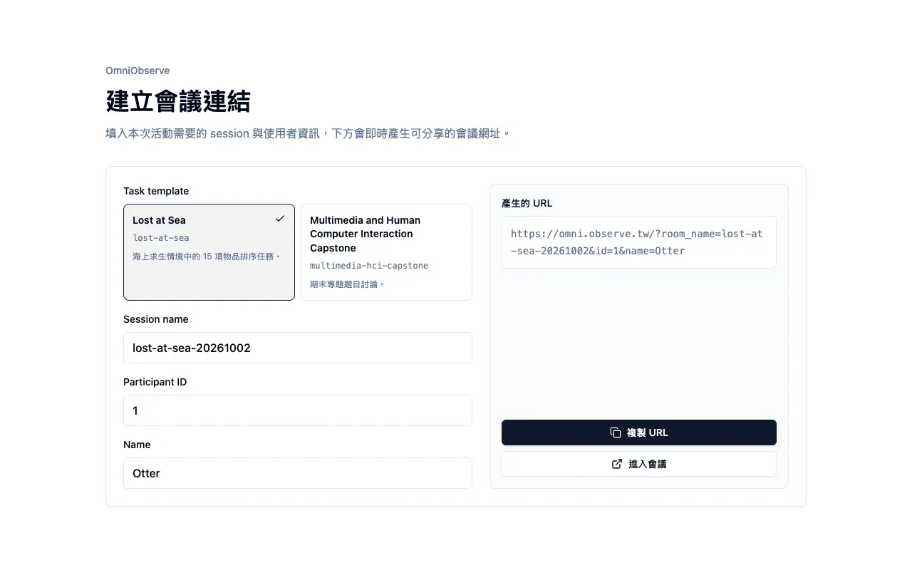
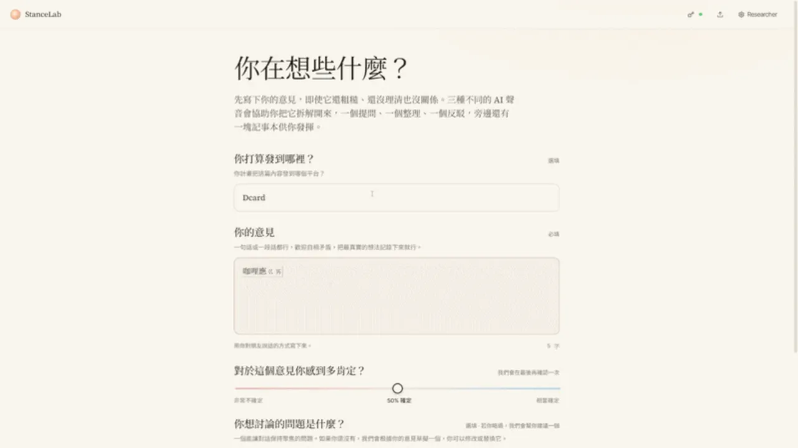
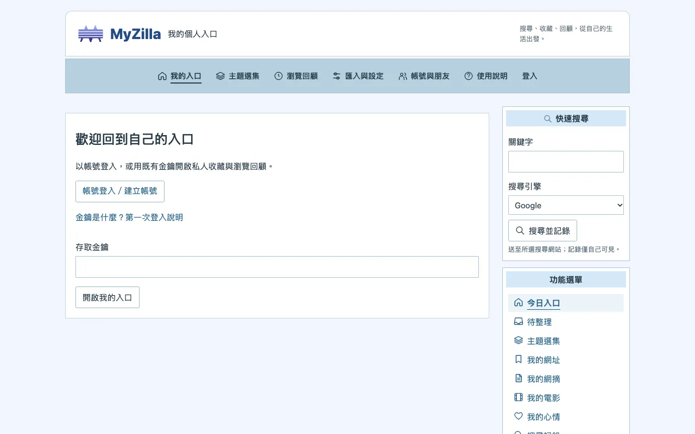
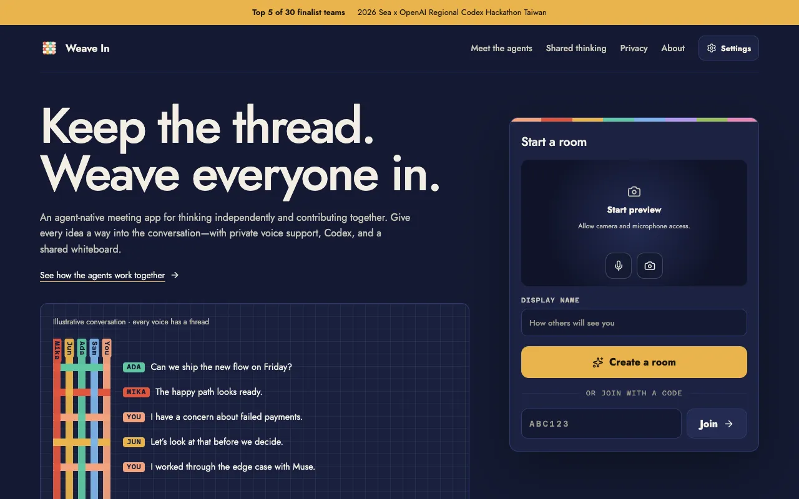
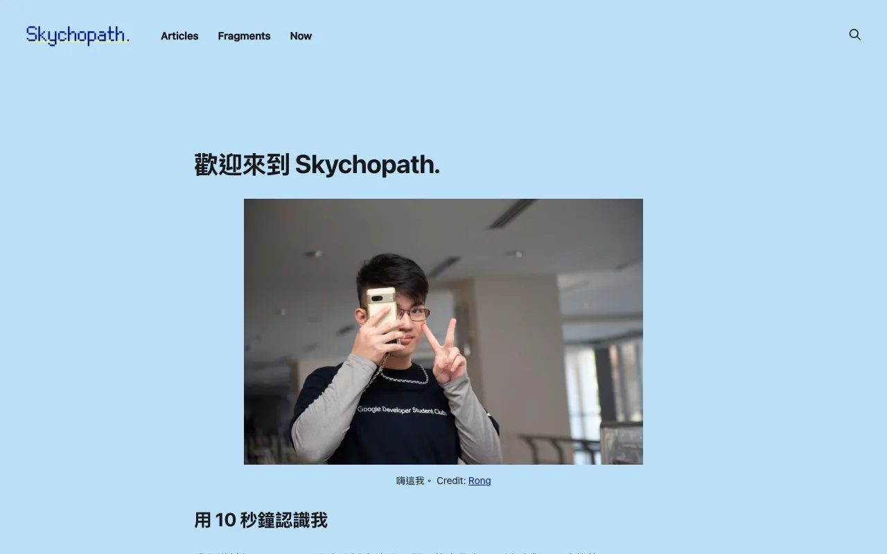
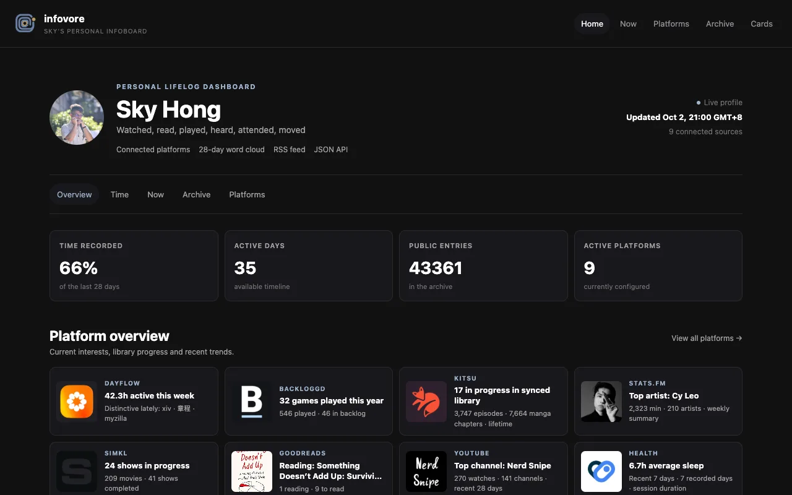
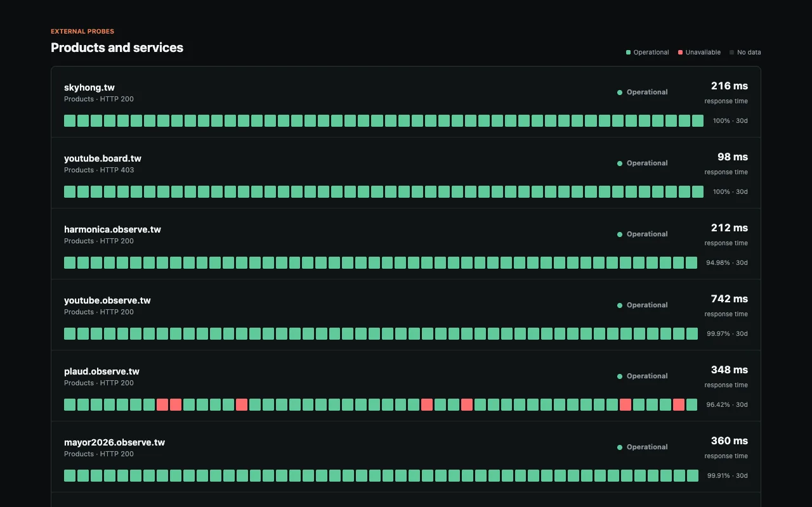

口琴觀測站
Harmonica Observatory · 世界各地的口琴活動、演奏者與樂譜
從臺灣出發、擴展到全世界的口琴資訊目錄：活動、學生社團、樂團、演奏者、教學工作室、 比賽指定曲與樂譜來源。散落在各社群平台與各種語言的公開資訊集中在一起， 並保留原文與原始連結。介面支援繁體中文、English、日本語、한국어。
- 近 24 小時限動牆 — 追蹤口琴圈 Instagram Stories 動態
- 公開活動日曆 — 各國與線上活動，保留原始時區，Google Calendar 與 ICS 訂閱
- 來源名錄與樂譜索引 — 依國家、區域篩選，比賽曲目可依學年與編制查詢
- 開放投稿與資料 API — 補充或更正來源，附 RSS feed 與公開 API

竹梅活動觀測站
清大 × 陽明交大校園活動貼文河道
自動彙整清華大學與陽明交通大學的社團與校方公開貼文 —— Instagram、Facebook、Threads、X 與校園公告，經 LLM 抽取活動名稱、時間與地點， 整理成可依校區、平台、活動類型與主辦單位篩選的河道。
- 活動列表與日曆 — 迎新、招生、演出、講座一目瞭然
- 限動牆 — 兩校社團近 24 小時的 Instagram Stories
- 多管道訂閱 — Telegram 推播、RSS 與 ICS 行事曆

2026 市長官方來源觀測站
六都市長候選人官方發文時間軸
收錄臺北、新北、桃園、臺中、臺南、高雄市長候選人的官方公開發文， 目前監看 13 位候選人、已收錄超過 3,500 則貼文，跨平台合併成單一時間軸， 並以議題自動分類統計比例。
- 六都總覽 — 各市候選人陣營與發文量對照
- 議題選擇器與議題光譜 — 看每位候選人談什麼、談多少
- 主動發文判別 — 區分主動發文與回應他方觀點

新文易數
同一件事，各家怎麼說
每 9 到 60 分鐘爬取約一百家臺灣新聞媒體，把標籤、事件與議題整理成可以比較的資料： 過去 24 小時的新聞量與藍綠媒體比例、正在升溫的議題，以及同一件事在各家的標題寫法。
- 新聞總覽與同題不同標 — 政治事件的藍綠媒體標題並排對照
- 關鍵字排行與事件表 — 標籤分數與爆發力，同時爆發的標籤自動分群成事件、每小時封存
- 公開 API 與 RSS — 免金鑰、CORS 開放，附 OpenAPI 規格與事件／標籤 feed
rep0rter
公民科技社群的 AI 記者
每小時讀過 g0v、Code for Korea、Code for Japan 等公民科技社群的公開協作空間 —— Slack、GitHub、Mastodon、RSS 與公開 Notion，挑出值得關注的進展，寫成短篇報導。
- 四種語言 — 繁體中文、English、日本語、한국어，每篇都附原始來源卡片
- 編輯規則 — 評分、去重，排除機器人、CI 雜訊與選擇退出的人
- 多管道發布 — 網站、RSS、Telegram 頻道與 Threads
YouTube Board
即時 YouTube 資料儀表板
把公開 YouTube 頻道、直播、影片、關鍵字與主題群組整理成即時資料儀表板： 監看 1,100 多個頻道、8 個分類（新聞、電視台、政治光譜等）， 追蹤的週觀看總量超過 14 億次。
- 直播熱度 — 目前直播排行、帶狀直播、單日與期間排行
- 關鍵字追蹤 — 人物、事件與詞彙的影片、文字雲和趨勢
- AI 摘要 — 每日、每小時與期間事件的頻道重點摘要
- 市長報表 — 縣市候選人與地方政治關鍵字

urtube
Your YouTube life, remembered
私人的 YouTube 注意力封存庫：每日同步 Google My Activity 的跨裝置觀看紀錄， 搭配 Chrome 擴充功能量測實際觀看秒數，加上觀看進度、頻道與 AI 主題分類， 看見自己的注意力隨時間怎麼移動。
- 每個來源、同一條時間軸 — 不抽樣、不會過期
- 隱私即架構 — 每個帳號獨立資料庫，搜尋詞加密儲存，儀表板預設私人
- 看見自己的變化 — 注意力轉移、頻道動能與跨人比較

OmniObserve
揭露隱藏共識的線上會議引導
陽明交大 HAIX 實驗室的研究平台。參與者透過私人語音輸入（back channel）留下 Idea Blocks， 系統跨參與者偵測相似但沒說出口的想法，以匿名提示推播，讓潛在共識浮上公開討論。
- Front–back channel — 視訊會議、即時語音辨識與私人想法並行
- 匿名相似提示 — 知道有人跟自己想得一樣，但不揭露身份與內容
- 研究工具 — 任務範本、會議連結產生器與研究者監看介面

StanceLab
把第一反應整理成可討論的立場
寫下粗略的意見與信心程度，再和 AI 一起把它拆開：訪談者釐清、導師整理、反方挑戰， 旁邊的記事本隨時收集有用的片段，最後收斂成可以發出去的草稿。
- 三種角色或單一夥伴 — 可比較多角色與一般聊天機器人的差異
- 自帶金鑰 — OpenRouter／OpenCode Go，無金鑰時有示範模式
- 匯出與續寫 — 草稿匯出文字，整段 session 可匯出 JSON 再匯入

MyZilla
我的個人入口 · 瀏覽回顧
把 2000 年代的 MyZilla 個人入口重新做一次 —— 網址收藏、網摘、多站搜尋、電影與心情， 再加上完整的瀏覽歷史回顧。原始歷史只保留在自己的伺服器，不會公開。
- 瀏覽回顧 — 網站排行、可全文搜尋的造訪紀錄，以及擴充功能量測的前景時間
- 個人洞察與 AI 週回顧 — 興趣地圖、探索路徑，每天整理最近 7 天的重點與線索
- 帳號與朋友 — 邀請制私人帳號，雙方同意後才比較興趣分布

localplaud
自架的 Plaud 錄音處理流程
繼續用實體 Plaud 錄音筆與官方上傳，但轉錄、講者分離、摘要、搜尋與問答 全部改在自己的機器上跑 —— 透過官方 Open API 拉回原始音檔，之後的衍生資料都由自己保管。
- 完整處理流程 — 轉檔、轉錄、對齊、講者分離、校正，產生筆記、章節與心智圖
- 跨錄音 Ask — 對單一錄音或整個資料庫提問，回答附可播放的引用片段
- 自有硬體推論 — 部署在實驗室 GPU 主機，可插拔的本地 ASR 與模型
更多專案
不在 observe.tw 底下，但同樣是最近在做的東西。
Weave In
Keep the thread. Weave everyone in.
對抗團體迷思的瀏覽器會議：最多八人共享視訊、螢幕、即時字幕與白板，不需要帳號。 2026 Sea × OpenAI Codex Hackathon Taiwan 決賽入圍（Top 5/30）。
- Muse — 每個人的私人助理，可打字、口述或即時語音對話
- Omni — 共享引導者，察覺過早收斂、偏題或發言不均，經同意才開口
- WebMCP — Codex 等外部代理可讀取會議脈絡、操作白板

Skychopath.
個人部落格
寫反思、專案與各種著迷的事。自架 Ghost，主題以官方 Source 為基底自行維護，個人修改集中在獨立的 partials 與樣式，官方更新可以直接合併。
- Articles — 長文：反思、專案紀錄與心得
- Fragments — 短篇與零碎的想法
- Now — 現在正在做、在想的事

infovore
生活年輪
彙整玩過、看過、讀過、聽過與參加過的東西 —— Backloggd、Kitsu、stats.fm、Simkl、Goodreads、YouTube 等來源統一正規化成同一份資料，存進 SQLite，上游掛掉也不會讓頁面空白。
- 公開時間軸 — 去重後的活動紀錄，附 RSS 與 JSON API
- 狀態卡片 — Satori 即時產生的 SVG／PNG／WebP 卡片，可嵌入 GitHub README
- Wrapped 與 MCP — 年度回顧，以及給 AI 工具查詢的 MCP 端點

Sky Status
自架服務的公開維運儀表板
監看所有自架服務的公開端點、Docker 狀態與遠端主機，保留 90 天的可用性歷史；金鑰只留在伺服器端，從不送到瀏覽器。
- 可用性歷史 — 分段 uptime 長條、回應時間與 7／30／90 天統計
- 到期監看 — TLS 憑證與網域到期（RDAP，.tw 走 WHOIS）
- 告警與用量 — Discord 斷線／恢復通知、心跳檢查、OpenAI 用量與 Prometheus 指標

Encore
竹韻口琴社攤位點歌系統
社團博覽會攤位用：觀眾掃 QR 點歌投票，大螢幕放 MV、音響出伴奏、耳機出原唱導聽，三路同步。整套只吃手機熱點的區域網路，不需要網際網路。
- 三路同步 — 以伴奏為主時鐘，MV 每秒校正，導唱可調 ±500ms 偏移
- 現場點歌 — 觀眾手機投票，曲庫丟檔即可重新掃描
- 演奏控制台 — A-B 循環、不變調變速，全部有鍵盤快捷鍵
這一頁本身也是開源的：skyhong2002/observe.tw